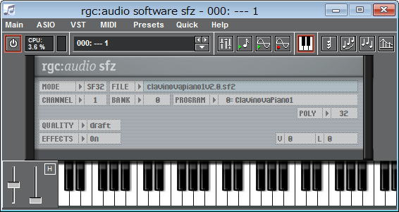

| TOP | weblog | TIPS | Works | リンク |
| 2012-10-28 Windows8Pro Midi環境の状況 Windows8Proをインストした後、色々と試して、何とかサウンドフォントでリアルタイム演奏を出来るところまできました。 ですが、レイテンシは僅かに発生します。 リアルタイム演奏はそこそこＯＫですが、midi録音が一切できません、ゲイツシンセ（Windowsに標準実装されているソフト音源を「ゲイツシンセ」と呼ぶたしいです）でもダメです。 midi録音ソフトを変えないとダメな感じです、「Studio One」にチャレンジしてみようかな？ とりあえず、midiのリアルタイム演奏の環境は以下の通り。 ・ＶＳＴＩのホストプログラム「minihost」 ・ＶＳＴｉ楽器 SoundFontを実装してインスツルメンツになってしまう変なＶＳＴｉ「Cakewalk - SFZ Player」 ・Virtual MIDI LoopBack device driver.「LoopBe1」  |